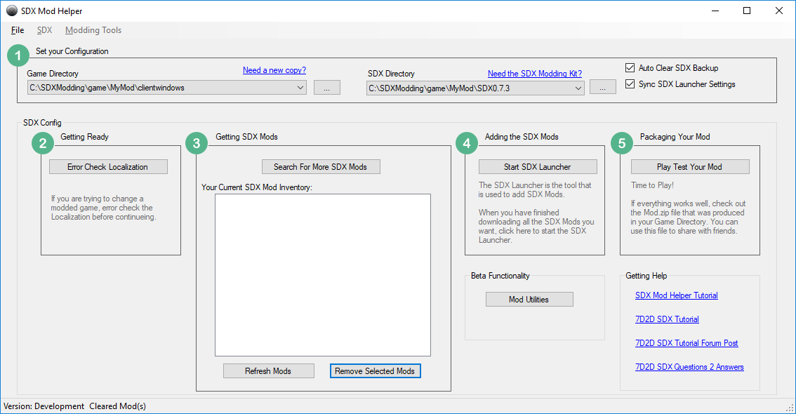
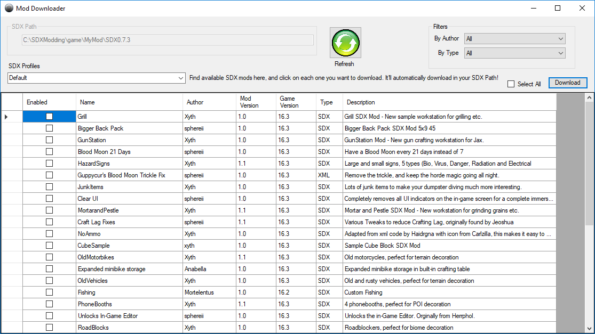
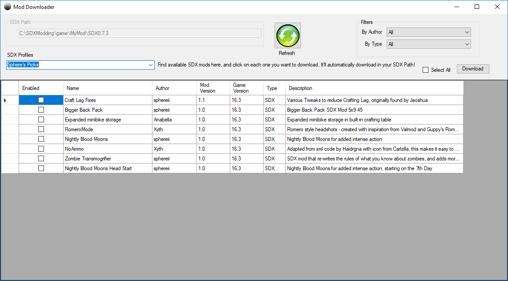
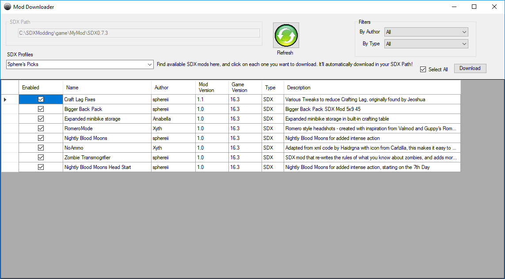
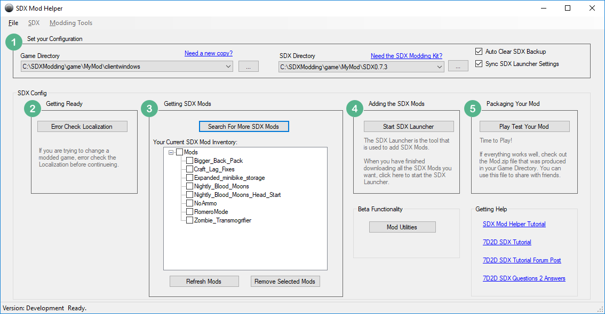

Using the 7D2D SDX Mod Helper, you will want to set up your Game Directory and SDX directories
In the Game Directory, click on the button with three dots, and choose the clientwindows you selected.
Do the same for the SDX Directory until it looks like this:

To find SDX Mods, click on the Search For mode SDX Mods

The SDX Profiles lets you narrow your view on which available mods, depending on the experience you want to see. You may leave it to Default to view all of them.
For this example, we'll select Sphere's Picks as the SDX Profile:

You may select individual ones, or click on Select All to check them all.

Then click on the Download button. A series of black windows will pop up, and download the mod.

Created with the Personal Edition of HelpNDoc: Write EPub books for the iPad